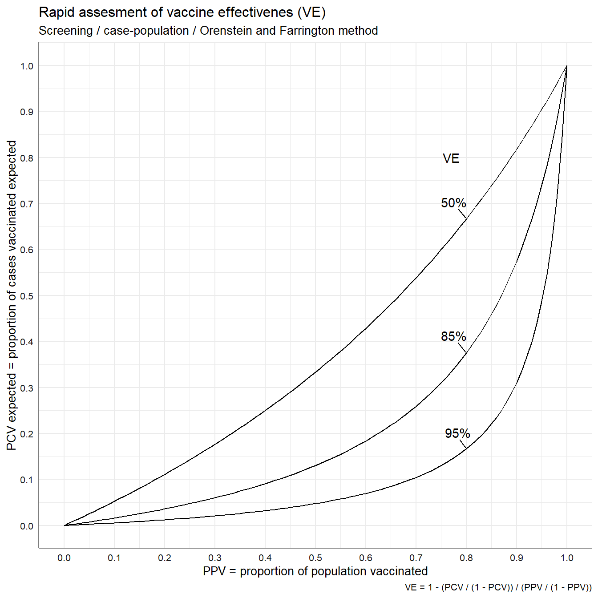
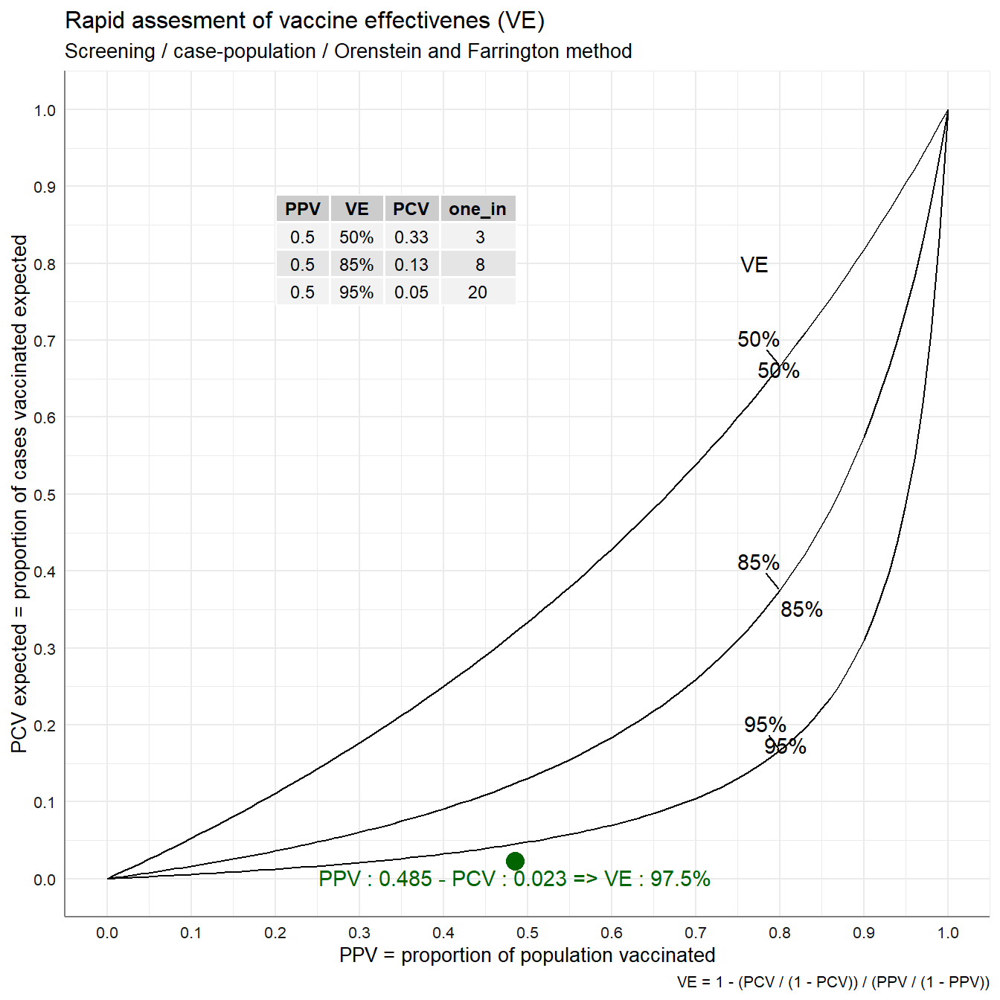
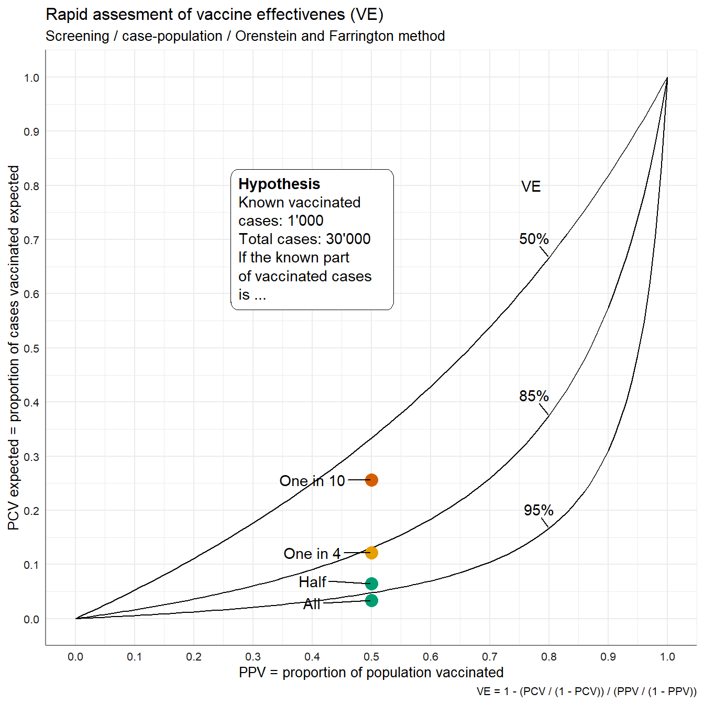
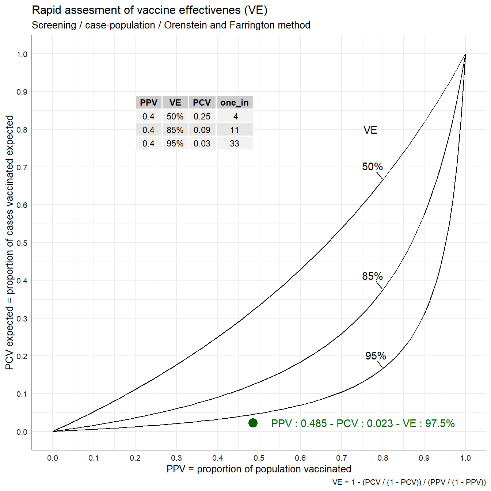
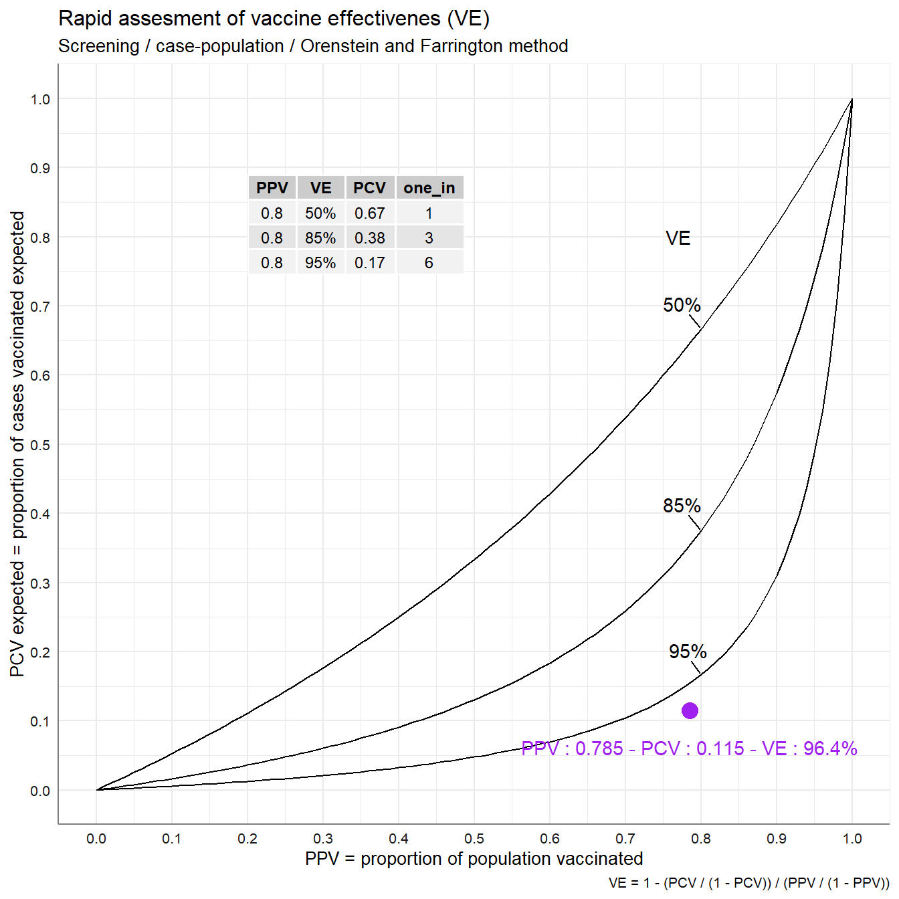

COVID-19 - Vaccine efficiency/effectiveness - nomogram
olivier.duperrex@unisante.ch
version 2021-09-03
Last updated: 2021-09-07
Checks: 7 0
Knit directory: vaccine_effectiveness_screening_method/analysis/
This reproducible R Markdown analysis was created with workflowr (version 1.6.2). The Checks tab describes the reproducibility checks that were applied when the results were created. The Past versions tab lists the development history.
Great! Since the R Markdown file has been committed to the Git repository, you know the exact version of the code that produced these results.
Great job! The global environment was empty. Objects defined in the global environment can affect the analysis in your R Markdown file in unknown ways. For reproduciblity it’s best to always run the code in an empty environment.
The command set.seed(20210826) was run prior to running the code in the R Markdown file. Setting a seed ensures that any results that rely on randomness, e.g. subsampling or permutations, are reproducible.
Great job! Recording the operating system, R version, and package versions is critical for reproducibility.
Nice! There were no cached chunks for this analysis, so you can be confident that you successfully produced the results during this run.
Great job! Using relative paths to the files within your workflowr project makes it easier to run your code on other machines.
Great! You are using Git for version control. Tracking code development and connecting the code version to the results is critical for reproducibility.
The results in this page were generated with repository version e9de552. See the Past versions tab to see a history of the changes made to the R Markdown and HTML files.
Note that you need to be careful to ensure that all relevant files for the analysis have been committed to Git prior to generating the results (you can use wflow_publish or wflow_git_commit). workflowr only checks the R Markdown file, but you know if there are other scripts or data files that it depends on. Below is the status of the Git repository when the results were generated:
Ignored files:
Ignored: .Rhistory
Ignored: .Rproj.user/
Ignored: output/png4ppt/p0_1_VE_nomogram_PPV_50_data_global.png
Ignored: output/png4ppt/p0_1_VE_nomogram_PPV_50_data_global_hypothetical.png
Ignored: output/xlsx/
Unstaged changes:
Modified: 0_run_ME.R
Note that any generated files, e.g. HTML, png, CSS, etc., are not included in this status report because it is ok for generated content to have uncommitted changes.
These are the previous versions of the repository in which changes were made to the R Markdown (analysis/VE_nomogram.Rmd) and HTML (docs/VE_nomogram.html) files. If you’ve configured a remote Git repository (see ?wflow_git_remote), click on the hyperlinks in the table below to view the files as they were in that past version.
| File | Version | Author | Date | Message |
|---|---|---|---|---|
| html | 08b82b2 | Olivier.Duperrex | 2021-09-06 | Build site. |
| Rmd | 26eb3f7 | Olivier.Duperrex | 2021-09-06 | save xlsx |
| html | f8e9fda | Olivier.Duperrex | 2021-09-06 | Build site. |
| Rmd | 1e08d2a | Olivier.Duperrex | 2021-09-06 | Add hypothetical example and update refs |
| Rmd | bc2ec51 | Olivier.Duperrex | 2021-09-02 | Add extra point SO as example |
| html | dabb711 | Olivier.Duperrex | 2021-08-27 | Build site. |
| Rmd | a7d4bdc | Olivier.Duperrex | 2021-08-27 | Initial commit |
| html | 8fb4a90 | Olivier.Duperrex | 2021-08-26 | Build site. |
| Rmd | e5ffc18 | Olivier.Duperrex | 2021-08-26 | Initial commit |
TODO : add comments
Context
In real life public health, we need to understand if the vaccination is helping to control the COVID-19, or if we need to investigate further.
WHO discourages the use of the case-population method (‘screening’) to evaluate the vaccine effectiveness in this context, but states that it is appropriate “if there is a need for more rigorous investigation.”(WHO 2021) - For details of strength and weakness, please refer to Table 1 of the document
The ECDC has a very useful ppt. (ECDC 2018)

WHO. Evaluation of COVID-19 vaccine effectiveness. 2021
Aim
Recreate the vaccine efficacy (VE) nomogram from Orenstein 1985 paper (Orenstein et al. 1985)
Add some values to quickly check where the current vaccine effectiveness is
Calculate vaccine effectiveness approximation using the Farrington method (Farrington 1993)
Setting up the scene
knitr::opts_chunk$set(echo = TRUE, collapse = TRUE, comment = NA, include = TRUE, fig.width = 7, fig.height = 7)
# avoid scientific notation
options(scipen=999)
## you are here -----------------------------------------------------
# rm(list = ls())
here::here()[1] "C:/Users/ol8094/Documents/_analyses/vaccine_effectiveness_screening_method"Select language for graph labels
## select the language by comment / uncomment the two lines below
language_chosen <- "en"
# language_chosen <- "fr"
if (language_chosen == 'fr') {
## labels fr ---------------------------------
lab_y <- "PCV attendus = proportion des cas vaccinés attendus"
lab_x <- "PPV = proportion de la population vaccinée"
title <- "Approximation rapide de l'efficacité vaccinale réelle (VE)"
subtitle <- "Evaluation rapide / cas-population / Orenstein et Farrington"
lab_VE <- "Efficacité vaccinale"
label_annotation_cases_vacc_known <- gt::md("**Hypothèses**
Cas vaccinés connus : 1'000
Cas totaux : 30'000
Si la part connue
des cas vaccinés
est de ...")
label_short <- c("Tous", "Moitié", "Un sur 4", "Un sur 10") # known vaccinated cases
} else {
## labels en ---------------------------------
lab_y <- "PCV expected = proportion of cases vaccinated expected"
lab_x <- "PPV = proportion of population vaccinated"
title <- "Rapid assesment of vaccine effectivenes (VE)"
subtitle <- "Screening / case-population / Orenstein and Farrington method"
lab_VE <- "Vaccine efficacy"
label_short <- c("All", "Half", "One in 4", "One in 10") # known vaccinated cases
label_annotation_cases_vacc_known <- gt::md("**Hypothesis**
Known vaccinated cases: 1'000
Total cases: 30'000
If the known part
of vaccinated cases
is ...")
}The equations
Look at the references for original formulas.
VE_equation <- "VE = 1 - (PCV / (1 - PCV)) / (PPV / (1 - PPV))"
PCV_equation <- "PCV = (PPV - (PPV * VE)) / (1 - (PPV * VE))"
# caption_table : will be used as caption
caption_table <- VE_equationLoad libraries
pacman::p_load(
data.table,
ggplot2,
ggpmisc,
ggrepel,
scales
)Setup plots and tables
## themes and title for plots ---------------------------------------
theme_set(sjPlot::theme_sjplot2(base_size = 10))
Registered S3 methods overwritten by 'parameters':
method from
as.double.parameters_kurtosis datawizard
as.double.parameters_skewness datawizard
as.double.parameters_smoothness datawizard
as.numeric.parameters_kurtosis datawizard
as.numeric.parameters_skewness datawizard
as.numeric.parameters_smoothness datawizard
print.parameters_distribution datawizard
print.parameters_kurtosis datawizard
print.parameters_skewness datawizard
summary.parameters_kurtosis datawizard
summary.parameters_skewness datawizard
theme_update(
legend.title = element_blank(),
legend.position = "right"
)
## Prepare some elements for plots ----------------------------------
# out_png4ppt : output folder for png ---
# needs to be modified according to your own project structure
out_png4ppt <- here::here('output', 'png4ppt')
# if(!fs::dir_exists(out_png4ppt)){
# fs::dir_create(out_png4ppt)
# }Prepare the nomogram
## create a list of VE ----------------------------------------------
## selecting only 3 for clarity
VE_list <- c(0.5, 0.85, 0.95)
## create the list for PPV ------------------------------------------
PPV <- seq(0, 1, 0.01)
## create a data.table with combined values -------------------------
dt_1 <- setDT(merge(PPV, VE_list))
## rename columns ---------------------------------------------------
setnames(dt_1, c('x', 'y'), c('PPV', 'VE'))
## calculate the PCV -----------------------------------------------
dt_1[, PCV := (PPV - (PPV * VE)) / (1 - (PPV * VE))]
head(dt_1)
PPV VE PCV
1: 0.00 0.5 0.000000000
2: 0.01 0.5 0.005025126
3: 0.02 0.5 0.010101010
4: 0.03 0.5 0.015228426
5: 0.04 0.5 0.020408163
6: 0.05 0.5 0.025641026
tail(dt_1)
PPV VE PCV
1: 0.95 0.95 0.4871795
2: 0.96 0.95 0.5454545
3: 0.97 0.95 0.6178344
4: 0.98 0.95 0.7101449
5: 0.99 0.95 0.8319328
6: 1.00 0.95 1.0000000## p1 - plot w nomogram ---------------------------------------------
## saved as p0_VE_nomogram.png
(p1 <- ggplot(dt_1,
aes(PPV, PCV, group = VE,
label = ifelse(PPV == 0.8, percent(VE), ""))) + ## just add label at this value
geom_line() +
labs(
title = title,
subtitle = subtitle,
x = lab_x,
y = lab_y,
caption = caption_table
) +
scale_x_continuous(n.breaks = 10) +
scale_y_continuous(n.breaks = 10) +
ggrepel::geom_text_repel(nudge_y = 0.02) +
annotate('text', x = 0.77, y = 0.8, label = "VE") +
theme(plot.subtitle = ggtext::element_markdown())
)
ggsave("p0_VE_nomogram.png", path = out_png4ppt)
Saving 7 x 7 in imageCreate some examples
## example tables --------------------------------------------------
(t1_PPV50 <-
dt_1[PPV == 0.5,][, PCV := round(PCV, 2)][, VE := percent(VE)][, one_in := round(1 / PCV)])
(t2_PPV40 <-
dt_1[PPV == 0.4, ][, PCV := round(PCV, 2)][, VE := percent(VE)][, one_in := round(1 / PCV)])
(t3_PPV80 <-
dt_1[PPV == 0.8, ][, PCV := round(PCV, 2)][, VE := percent(VE)][, one_in := round(1 / PCV)])PPV 50%
## p0_1_VE_nomogram_PPV_50.png ------------------------------------------
## create the plot with the reference table for PPV 50%
p1_ppv50 <- p1 + annotate('table', x = 0.2, y = 0.89, label = list(t1_PPV50))
ggsave("p0_1_VE_nomogram_PPV_50_no_data.png", path = out_png4ppt)
Saving 7 x 7 in image
## manual update data ----
ppv_all <- 0.485
pcv_all <- 0.023
ve_all <- formattable::percent(1 - (pcv_all / (1 - pcv_all)) / (ppv_all / (1 - ppv_all)), 1)
label_all <-
gt::md(paste0("PPV : ",
ppv_all,
" - PCV : ",
pcv_all,
" => VE : ",
ve_all))
## add points and labels to the plot ----
p1_ppv50_a <- p1_ppv50 +
geom_text_repel()+
geom_point(x = ppv_all,
y = pcv_all,
col = 'darkgreen',
size = 4) +
annotate(
'text',
x = ppv_all,
y = pcv_all,
vjust = 1.5,
col = 'darkgreen',
label = label_all
)
p1_ppv50_a
Don't know how to automatically pick scale for object of type from_markdown. Defaulting to continuous.
ggsave("p0_1_VE_nomogram_PPV_50_data_global.png", path = out_png4ppt)
Saving 7 x 7 in image
Don't know how to automatically pick scale for object of type from_markdown. Defaulting to continuous.with hypothesis
Persons who are fully vaccinated seem less likely to go for a test even with a few symptoms that are COVID-19 compatible.
## add an hypothetical value ----
ppv_all <- 0.5
total_cases_N <- 30000
cases_vacc_N <- 1000
## create a table for hypothesis ----
prop_cases_vacc_tested_hypothetical <- c(1, .5, .25, .1)
# label_short <- c("All", "Half", "One in 4", "One in 10") # known vaccinated cases
dt_2 <- data.table(prop_cases_vacc_tested_hypothetical, cases_vacc_N, total_cases_N)
dt_2[, cases_vacc_hypothetical_N := cases_vacc_N / prop_cases_vacc_tested_hypothetical]
dt_2[, cases_vacc_missed_N := cases_vacc_hypothetical_N - cases_vacc_N]
dt_2[, total_cases_hypothetical_N := total_cases_N + cases_vacc_missed_N]
dt_2[, pcv_hypothetical := formattable::percent(cases_vacc_hypothetical_N / total_cases_hypothetical_N, 1)]
dt_2[, ve_hypothetical := formattable::percent(1 - (pcv_hypothetical / (1 - pcv_hypothetical)) / (ppv_all / (1 - ppv_all)), 1)][]
prop_cases_vacc_tested_hypothetical cases_vacc_N total_cases_N
1: 1.00 1000 30000
2: 0.50 1000 30000
3: 0.25 1000 30000
4: 0.10 1000 30000
cases_vacc_hypothetical_N cases_vacc_missed_N total_cases_hypothetical_N
1: 1000 0 30000
2: 2000 1000 31000
3: 4000 3000 33000
4: 10000 9000 39000
pcv_hypothetical ve_hypothetical
1: 3.3% 96.6%
2: 6.5% 93.1%
3: 12.1% 86.2%
4: 25.6% 65.5%
dt_2[, VE := ve_hypothetical]
dt_2[, point_color:=fcase(
VE<.8, '#D55E00',
VE >=.8 & VE<.9, '#E69F00',
VE>=.9, '#009E73'
)]
dt_2[,label_hypothetical :=
paste0("PPV : ",
formattable::percent(ppv_all, 1),
" - PCV : ",
pcv_hypothetical,
" => VE : ",
ve_hypothetical)]
dt_2[,label_short := label_short][]
prop_cases_vacc_tested_hypothetical cases_vacc_N total_cases_N
1: 1.00 1000 30000
2: 0.50 1000 30000
3: 0.25 1000 30000
4: 0.10 1000 30000
cases_vacc_hypothetical_N cases_vacc_missed_N total_cases_hypothetical_N
1: 1000 0 30000
2: 2000 1000 31000
3: 4000 3000 33000
4: 10000 9000 39000
pcv_hypothetical ve_hypothetical VE point_color
1: 3.3% 96.6% 96.6% #009E73
2: 6.5% 93.1% 93.1% #009E73
3: 12.1% 86.2% 86.2% #E69F00
4: 25.6% 65.5% 65.5% #D55E00
label_hypothetical label_short
1: PPV : 50.0% - PCV : 3.3% => VE : 96.6% All
2: PPV : 50.0% - PCV : 6.5% => VE : 93.1% Half
3: PPV : 50.0% - PCV : 12.1% => VE : 86.2% One in 4
4: PPV : 50.0% - PCV : 25.6% => VE : 65.5% One in 10
name_xlsx <-
here::here(
'output',
'xlsx',
't_0_1_VE_nomogram_PPV_50_data_global_hypothetical.xlsx'
)
writexl::write_xlsx(dt_2, name_xlsx)
## add points and labels to the plot ----
p1 +
# hypothetical points
geom_point(
data = dt_2,
aes(x = ppv_all,
y = pcv_hypothetical,
label = label_short),
col = dt_2$point_color,
size = 4
) +
ggrepel::geom_text_repel(
data = dt_2,
aes(x = ppv_all,
y = pcv_hypothetical,
label = label_short),
nudge_x = -.1
) +
# add a text box to explain
ggtext::geom_textbox(
x = 0.4,
y = 0.7,
width = grid::unit(0.25, "npc"),
# 25% of plot panel width
label = label_annotation_cases_vacc_known
)
Warning: Ignoring unknown aesthetics: label
ggsave("p0_1_VE_nomogram_PPV_50_data_global_hypothetical.png", path = out_png4ppt)
Saving 7 x 7 in imageFor a vaccination coverage of 0.5, a number of total cases of 30000 and 1000 vaccinated, this exploration shows that if we know :
all or half of the cases, the vaccine effectiveness is close the vaccine efficacy
only one vaccinated cases in 4, the vaccine effectiveness is lower but acceptable
only one vaccinated cases in 10, the vaccine effectiveness is much lower and is not acceptable
PPV 40%
## manual update
ppv_all <- 0.485
pcv_all <- 0.023
ve_all <- formattable::percent(1 - (pcv_all / (1 - pcv_all)) / (ppv_all / (1 - ppv_all)), 1)
label_all <-
paste0("PPV : ",
ppv_all,
" - PCV : ",
pcv_all,
" - VE : ",
ve_all)
p1 + annotate('table',
x = 0.2,
y = 0.89,
label = list(t2_PPV40)) +
geom_point(x = ppv_all,
y = pcv_all,
col = 'darkgreen',
size = 4
) +
annotate('text',
x = ppv_all,
y = pcv_all,
hjust = - 0.1,
col = 'darkgreen',
label = label_all)
ggsave("p0_2_VE_nomogram_PPV_40.png", path = out_png4ppt)
Saving 7 x 7 in imagePPV 80%
ppv_seniors <- 0.785
pcv_seniors <- 0.115
ve_seniors <- formattable::percent(1 - (pcv_seniors / (1 - pcv_seniors)) / (ppv_seniors / (1 - ppv_seniors)), 1)
label_seniors <-
paste0("PPV : ",
ppv_seniors,
" - PCV : ",
pcv_seniors,
" - VE : ",
ve_seniors)
p1 + annotate('table',
x = 0.2,
y = 0.89,
label = list(t3_PPV80)) +
geom_point(x = ppv_seniors,
y = pcv_seniors,
col = 'purple',
size = 4) +
annotate('text',
x = ppv_seniors,
y = pcv_seniors,
vjust = 3,
col = 'purple',
label = label_seniors)
ggsave("p0_3_VE_nomogram_PPV_80.png", path = out_png4ppt)
Saving 7 x 7 in imageReferences
sessionInfo()
R version 4.1.0 (2021-05-18)
Platform: x86_64-w64-mingw32/x64 (64-bit)
Running under: Windows 10 x64 (build 18363)
Matrix products: default
locale:
[1] LC_COLLATE=French_Switzerland.1252 LC_CTYPE=French_Switzerland.1252
[3] LC_MONETARY=French_Switzerland.1252 LC_NUMERIC=C
[5] LC_TIME=French_Switzerland.1252
attached base packages:
[1] stats graphics grDevices utils datasets methods base
other attached packages:
[1] scales_1.1.1 ggrepel_0.9.1 ggpmisc_0.4.2-1 ggpp_0.4.2
[5] ggplot2_3.3.5 data.table_1.14.0 workflowr_1.6.2
loaded via a namespace (and not attached):
[1] tidyr_1.1.3 splines_4.1.0 here_1.0.1 modelr_0.1.8
[5] datawizard_0.2.0 assertthat_0.2.1 highr_0.9 yaml_2.2.1
[9] bayestestR_0.10.5 pillar_1.6.2 backports_1.2.1 lattice_0.20-44
[13] quantreg_5.86 glue_1.4.2 digest_0.6.27 gridtext_0.1.4
[17] promises_1.2.0.1 minqa_1.2.4 colorspace_2.0-2 htmltools_0.5.1.1
[21] httpuv_1.6.1 Matrix_1.3-4 conquer_1.0.2 pkgconfig_2.0.3
[25] broom_0.7.9 sjPlot_2.8.9 SparseM_1.81 purrr_0.3.4
[29] xtable_1.8-4 mvtnorm_1.1-2 whisker_0.4 later_1.2.0
[33] lme4_1.1-27.1 MatrixModels_0.5-0 emmeans_1.6.3 git2r_0.28.0
[37] tibble_3.1.3 farver_2.1.0 generics_0.1.0 sjlabelled_1.1.8
[41] ellipsis_0.3.2 pacman_0.5.1 withr_2.4.2 magrittr_2.0.1
[45] crayon_1.4.1 effectsize_0.4.5 ggtext_0.1.1 estimability_1.3
[49] evaluate_0.14 fs_1.5.0 fansi_0.5.0 nlme_3.1-152
[53] MASS_7.3-54 xml2_1.3.2 tools_4.1.0 lifecycle_1.0.0
[57] matrixStats_0.60.0 stringr_1.4.0 munsell_0.5.0 writexl_1.4.0
[61] formattable_0.2.1 ggeffects_1.1.1 compiler_4.1.0 rlang_0.4.11
[65] nloptr_1.2.2.2 grid_4.1.0 gt_0.3.1 parameters_0.14.0
[69] htmlwidgets_1.5.3 labeling_0.4.2 rmarkdown_2.10 boot_1.3-28
[73] gtable_0.3.0 sjstats_0.18.1 DBI_1.1.1 markdown_1.1
[77] sjmisc_2.8.7 R6_2.5.1 gridExtra_2.3 knitr_1.33
[81] dplyr_1.0.7 performance_0.7.3 utf8_1.2.2 rprojroot_2.0.2
[85] insight_0.14.3 stringi_1.7.3 Rcpp_1.0.7 vctrs_0.3.8
[89] tidyselect_1.1.1 xfun_0.25 coda_0.19-4